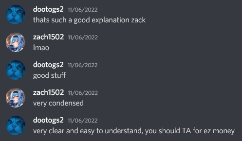
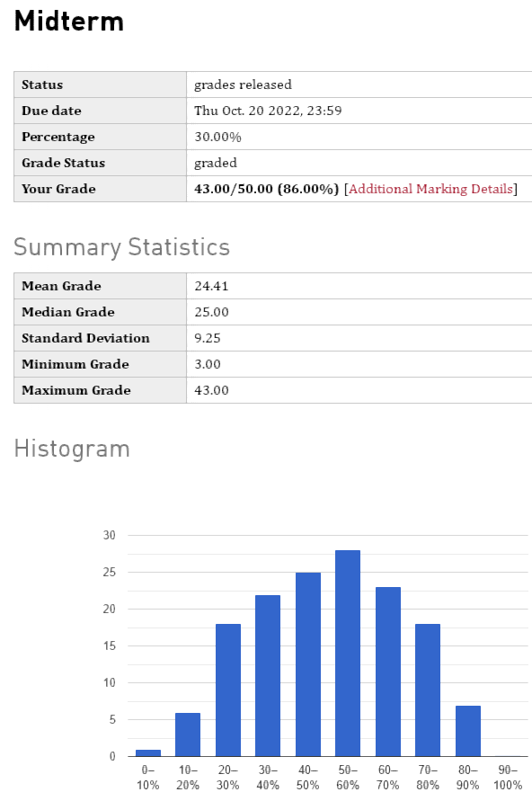

CMPT 295 Flexpost
Posted on November 17th, 2022
In the last post, I briefly mentioned CMPT 295. This course is by far, THE hardest lower-level courses you take.
CMPT 295 is Introduction to Computer Systems and it is a pre-requisite to many other very important courses to graduate. We learn about each layer of abstraction in a computer system and how they interact with each other. For example, we learnt about how gcc compiles C code into assembly code, which is then compiled into machine code. Using object files and a linker. We also programmed some very tough assignments in Risc-V assembly. Overall a very tough course.
At the start of the class, I was moderately worried about the course. I had skipped the summer term in favour of creating more projects for my co-op search. I was worried that I must have forgotten material from the previous year(s) at Langara and that I would be behind. It did not help that the professor I had was one of the lowest rated professors on RateMyProfessor.
However, I was pleasantly surprised to find that I was not behind at all. I already knew most of the technical and practical material. It was smooth sailing for me. The parts that I didn't know, were easily learnt since I already have a solid foundation of the material that I learnt from YouTube in the past.
Since the professor's lectures were very dry and the pre-recorded video lectures were hours long and of poor quality. For example, one week, we had an hour long video about linkers and how they work. When the entire concept can easily be explained with a diagram and 5 minutes tops. No offense to the professor, but I think he was just not a good lecturer. He knows his stuff though.
In the 295 Discord server, I was able to help many of my fellow students with their assignments, quizzes and, teach them the material and fill out gaps in their knowledge. For one of the assignments, the professor didn't really give us proper testing scripts. There was scripts, but they were not very good. So I wrote my own scripts and shared it with the Discord server. I have helped so much that some have simply told me to be a TA! (See Images Below)
So, Midterm season rolls around and I am feeling pretty confident. I have been helping my fellow students and I have been doing well on the assignments and quizzes. They do say, the best way to learn, is to teach. Now, it is time to put that to the test with the midterm.
The midterm was a 2 hour exam, with mostly fill in the blank questions. The questions were very straightforward, easy to understand and, unlike the quizzes. Wasn't plagued with typos and mistakes.
When the time was up, I was feeling pretty good about my answers. It went through an auto-grader and I got my mark back instantly. However I'm really only interested in the percentile rank. So I had to wait for everyone to finish. About 10 minutes later, groans, sighs and profanities filled the room. I overheard some mark sharing and it was not good. I heard 10s/50 20s/50 and the max I heard was 25/50.
We were allowed to appeal our marks and after that. Marks were finalized.
Lo and Behold.
Midterm average: 24.41/50
Nearly half the class failed the midterm. But I am top of the class. 😎
Post midterm, I continued to help my fellow students and I continued to do well on the assignments and quizzes. I talked with some people in the CSSS Common Lounge and apparently, getting 43/50 on this midterm with the professor is completely insane. Going through my mistakes again, I realized that if I was more careful, I could have gotten a little smidge higher. But I am still very happy with my mark.
Thank You for reading this post. I hope I entertained you and, I hope you have a great day.